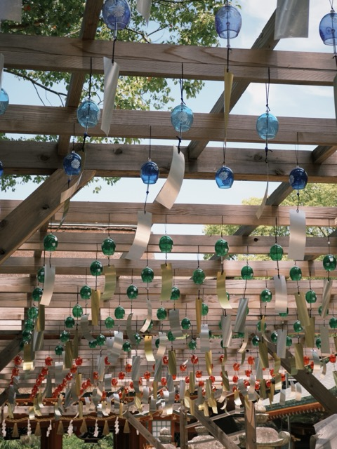

Dazaifu
Dazaifu Tenmangu
Dazaifu Tenmangu is dedicated to Sugawara Michizane, who is worshipped as Tenjin, the deity of learning, culture, and the arts. Many students visit to pray for academic success, and the shrine is strongly connected to plum blossoms.
